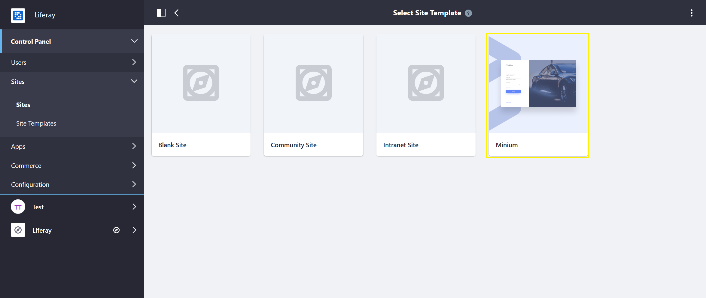

Accelerators¶
Liferay Commerce Accelerators make building stores and exploring Liferay Commerce fast and easy.
Note: Users who want to build their store from scratch are recommended to walk through Getting Started.
Stores in Liferay Commerce are comprised of an interrelated hierarchy of components: Sites, Channels, Catalogs, Products, Pages, and Widgets. An Accelerator quickly and easily sets up a functional store by providing a pre-configured Site Template with a hierarchy of store components, a theme, pre-set store configurations, and sample data.
Liferay Commerce comes with Minium, a B2B site accelerator, out-of-the-box.
To use an Accelerator:
Go to Control Panel → Sites → Sites.
Click the (+) button to add a new site.
Choose an Accelerator (Minium).

Enter a name: Your Site.
Click Save.
In the Site Menu click Go to Site.
Your accelerated site has been created.